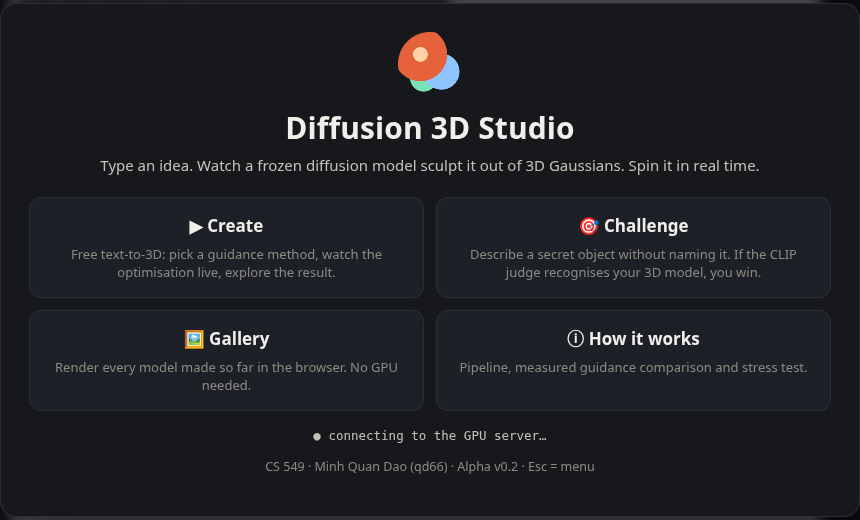
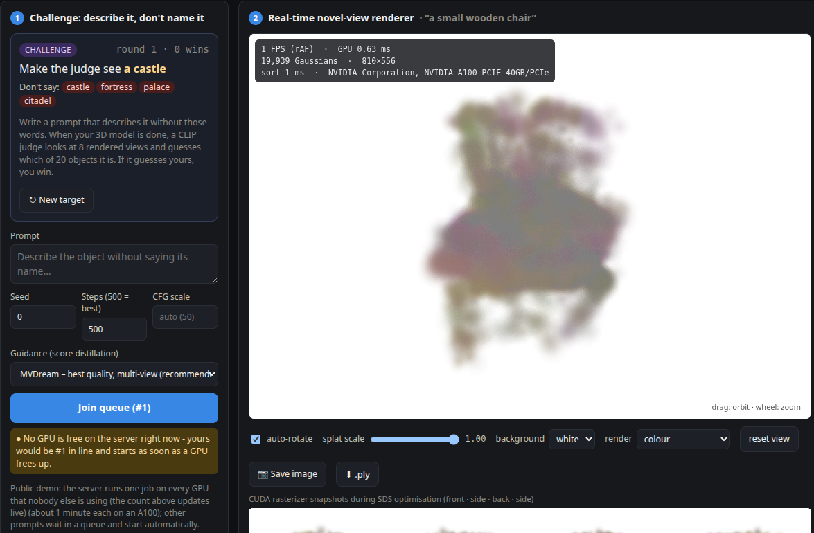
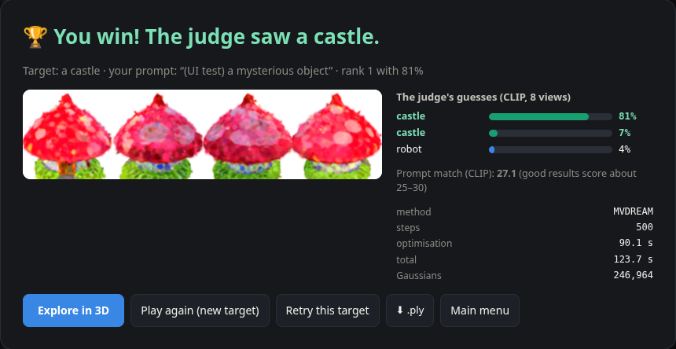

Assignment 3 proved the core mechanic: a text prompt optimises 3D Gaussians with gradients from a frozen diffusion model, and the result is rendered in real time. The Alpha wraps that mechanic in a game loop with a goal, a judge and a win/loss state:
Both pillars are integrated in the loop: procedural generation is the gameplay (your words → diffusion-guided Gaussians), and rendering is how you play and are judged
(real-time splatting viewer with colour/depth/centre modes; the judge scores rendered views). The judge picks the right object for 49/50 existing results
(evidence/judge_eval.csv); its only miss is a genuinely broken model.



configs/challenge.json), live taboo check, New target, session rounds / wins / streak..ply download; the app opens on a curated MVDream model.HF_HUB_OFFLINE) from local weights in a project weights/ folder; SD now loads in 4.8 s.sessionStorage, so a new tab counts as a new session.| Week | Engineering | Assets / content | Integration / milestone |
|---|---|---|---|
| 9 · Oct 26–Nov 1 | Alpha (done): game loop (menu → Create/Challenge → result), CLIP judge, render modes, offline jobs, watchdog | 20 challenge targets + taboo lists; judge calibration on 50 results | Alpha v0.2 live + tagged (this report) |
| 10 · Nov 2–8 | Stage-2 mesh refinement (main2.py) + mesh/Gaussian toggle in the viewer; reserve one GPU for the studio so jobs never wait behind other users | Reference render per challenge target (MVDream) for the result screen | Mesh download on the result screen |
| 11 · Nov 9–15 | Quality: MVDream + ISM-style deterministic targets; CFG/timestep schedule sweep; judge robustness (prompt ensembles, calibrated threshold) | Expand Challenge to 40 targets with easy/medium/hard tiers | Re-run guidance benchmark; difficulty levels live |
| 12 · Nov 16–22 | Persistence: SQLite for jobs, scores and a moderated leaderboard; admin hide/delete for the gallery; stable hosting (named tunnel or CS proxy) | UI polish: onboarding tips, icons, empty/error states | Integration: leaderboard + moderation + hosting together; classmate play-test |
| 13 · Nov 23–29 (Thanksgiving) | Viewer performance: GPU sort / level of detail, mobile layout; fix play-test issues | Curate final gallery content | Play-test feedback triage |
| 14 · Nov 30–Dec 6 | Feature freeze (beta): fix the top issues only; load test with parallel players | Record final demo video | Release candidate v1.0-rc; final report draft |
| 15 · Dec 7–13 | BUFFER WEEK: bug fixing, documentation and polish only; no new features | Final screenshots | v1.0 release + final submission |
green = done · purple = integration weeks (parts come together in week 12, frozen in week 14) · orange = buffer week (bug fixes, documentation, polish; no new features).
Run it: bash scripts/setup_env.sh, then bash scripts/serve_public.sh (or python server.py for local use). Linux, NVIDIA GPU with ≥ 12 GB; see the README.